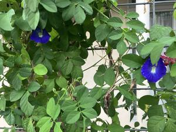

うるがいの話 ある日
最新: 契約不適合による補修請求【うるがいの話 ある日】とは 一日だけのプログです
『うるがいの話』の最新一日だけのプログで、通信料が少なく経済的だ。カニの画像をクリックすると全ての日付が載る『うるがいの話』サイトを表示します
|
|
【うるがいの話】 うるがい(ｳﾙｶﾞｲ urugai)とは、『もずくがに』の名前でとても大きくなります。 |
|---|---|
|
|
【カミマヤーの話】 猫のことを方言でマヤーといいます。カミマヤー（kamimayaa）とは、神の猫のことです。 |
|
【たながぁの音楽】 たながぁ（ﾀﾅｶﾞｰ tanagaa）とは手長えびのことで、何種類かあり大きいのは車 エビぐらいになります。 |

|
【ぶながぁの話】 ぶながぁ(ﾌﾞﾅｶﾞｰ bunagaa)とは、赤い髪の毛、赤い身体、そして身長は１ｍ２０ｃｍ ぐらい、川の蟹を食べているの目撃された。場所は沖縄県国頭郡大宜味村のと ある村僕の隣近所に住んでいる爺さんから、聞いた話です。 |
|
|
【ギーマの話】 ギーマ(giima)とは、山原の里山に咲くスズランに似た、 花を付けます。実は食べられます、 気が付くと口の周りが紫になっています。 |
2025年10月01日 (水）契約不適合による補修請求
15:00
１０月になりました、引渡完了日から３か月が過ぎました。とり
あえずホっとする。
不動産売買契約書 契約不適合による補修請求
１．売主は、買主に対し、引渡された土地および建物が品質に関
して契約の内容に適合しないもの（以下「契約不適合」といいま
す。）であるときは、引渡完了日から３ヶ月以内に通知を受けた
ものにかぎり、契約不適合責任を負います。
株式会社ランドネットから、ヨメにお義母さんマンションの売買
の勧誘のＤＭが届きました。最新の売買の情報が反映されていな
い。ネットで検索すると
不動産会社からのＤＭ、本当にうっとうしいです。
あれ受け取って好意的な人いますか？
登記簿謄本の閲覧しての営業でしょうが、毎回見ずに捨てており
、社名を聞くだけで悪い印象しかなくなりました。
住友不動産は受取拒否で返送して以来来なくなりましたが、東急
リバブルはもう何度も拒否してるのに届きます。
電話したら停止できるそうですが、一度かけたら混み合ってます
。お掛け直しくださいのアナウンス流れて腹立って以来掛けてい
ません。フリーダイヤルとはいえ、こちらに停止の手間をかけさ
せるって腹立ちます。
こんな社名を聞くだけで嫌な思いをさせる営業方法って意味ある
んですかね？
確かに。
ところで私の家のバタフライピーの花は咲きません！、それどこ
ろか鉢植えのは葉っぱが枯れ始めました。写真は、ジョギング途
中で撮りました。花が、二つです。二つも、二つしか、どっちで
しょう。

＠ｎｉｆｔｙホームページサービスは、１０月から終了すると言
ってたけど、納期遅れなのか、まだ、利用できます。もし、『う
るがいの話』が、見れなくなったら『うるがいの話 ある日』を
見てください。